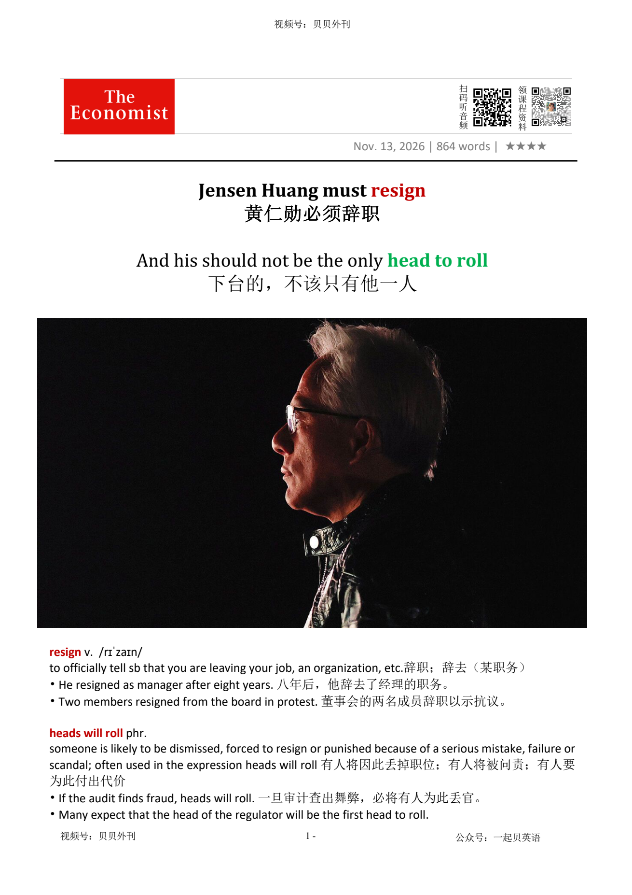

02 HEADLINE / 标题中英文解释
Jensen Huang must resign
黄仁勋必须辞职
And his should not be the only head to roll
下台的，不该只有他一人
resign
辞职；辞去（某职务）
to officially tell sb that you are leaving your job, an organization, etc.
Jensen Huang must resign
黄仁勋必须辞职
And his should not be the only head to roll
下台的，不该只有他一人
辞职；辞去（某职务）
to officially tell sb that you are leaving your job, an organization, etc.文章先补充黄仁勋丑闻的新事实：除了与一名被美国情报部门怀疑为间谍的客户高管有婚外情，他还被曝曾与直接向自己汇报的英伟达副总裁保持关系。
两人都是已婚人士，这种上下级关系也可能违反公司的行为准则并造成利益冲突。
作者据此明确主张黄仁勋必须辞职或被解雇。
关键问题不只在私人道德，而在判断力和国家安全风险。
他掌管着中国急于获得的敏感芯片技术，却与客户发展关系，还曾公开否认二人关系；外界也开始追问英伟达法务部门是否干预美国商务部对Megaspeed的调查。
支持黄仁勋留任的人认为，他对英伟达不可或缺，而英伟达又关系到美国在人工智能领域对中国的领先地位。
作者却反驳说，正因为公司如此重要，高层的严重失当行为才更应受到惩罚。
持续调查会分散黄仁勋的精力，也会损害英伟达在华盛顿的公信力。
文章随后把责任扩展到英伟达董事会和美国商务部。
董事会提出所谓分阶段交接，只会延长损害，也不可能用调查为黄仁勋已经承认的行为开脱。
商务部则被指未能阻止先进芯片流向中国，甚至在走私疑虑出现后仍允许英伟达向Megaspeed销售产品。
最后，作者将事件归因于一种权力豁免文化。
黄仁勋长期受到各国政府和市场追捧，逐渐相信普通规则不再适用于自己；特朗普政府内部也存在类似心态。
这种文化既伤害企业信誉，也削弱国家安全，因此被追责的不应只有黄仁勋。
The article reports new facts about Jensen Huang's scandal. Huang is already under investigation for an affair with a customer whom US officials believe may be a spy.
Five former Nvidia workers now say that he also had a relationship with Kimberly Powell, a vice president who reported to him. Both were married.
A relationship between a manager and a worker can break company rules and create a conflict of interest. The writer argues that Huang must resign or be fired.
The problem is not only his private behaviour. He controls sensitive American chip technology that China wants, so he should have been especially careful.
Instead, he had a relationship with a customer and publicly lied about it. There are also questions about whether Nvidia's top lawyer became involved in a government investigation of Megaspeed.
Some people say Huang must stay because he is essential to Nvidia, and Nvidia is important to America's lead in AI. The writer gives the opposite answer: because Nvidia is so important, serious misconduct at the top must have consequences.
Investigations, including one by the FBI, will distract Huang and damage Nvidia's credibility in Washington. The writer also criticises Nvidia's board and the US Commerce Department.
The board has spoken too carefully and may consider a slow change of leadership, but this would only make the damage last longer. The Commerce Department appears to have allowed sales to Megaspeed after concerns about smuggling were raised.
Democrats in Congress are expected to question the officials involved. The article ends with a wider warning about power.
Governments have treated Huang like a rock star for years, and he may have started to believe that normal rules did not apply to him. The same attitude can be seen in the Trump administration.
The writer says this culture of avoiding punishment has harmed a great American company and weakened national security. Huang should leave, but other responsible people should also face consequences.
丑闻新增事实与核心定性（Para 1-2） ├─ 新爆料：黄仁勋与下属高管存在私情 ├─ 核心案情：和疑似间谍客户有染，利益冲突 └─ 作者观点：判断严重失当，必须下台 多重疑点与辩护声音（Para 3-6） ├─ 关键疑问：何时知晓对方间谍嫌疑、是否干预调查 ├─ 支持方理由：黄仁勋对英伟达、美国AI优势不可替代 └─ 反方逻辑：正因为英伟达至关重要，更要追责 董事会与监管部门的失职（Para 7-9） ├─ 董事会：态度含糊，调查力度不足 ├─ 商务部：出口管控松懈，放任芯片外流 └─ 国会动向：民主党掌权后将启动质询 权力豁免文化的反思（Para 10） ├─ 根源：身居高位者自认凌驾规则 ├─ 危害：损害企业信誉、危及国家安全 └─ 呼吁：追责不止黄仁勋，多人应当引咎
Jensen Huang, the leader of Nvidia who is under investigation for an affair私通 with a woman who U.S. intelligence determined is a spy, also had an extramarital婚外的 relationship with an executive who reports to him, according to five people who worked at the company. The relationship, which has not been previously reported, was with Kimberly Powell, Nvidia’s vice president of health care. "Under Nvidia’s code of conduct行为准则, employees are told to avoid situations where our actions create conflict including personal relationships, and the company states that it promptly investigates reports of misconduct失职." Many corporations have policies against managers having relationships with subordinates下级. Mr. Huang, 63, and Ms. Powell, 48, were captured on video being affectionate表示关爱的 at a San Jose, Calif., hotel during a Nvidia conference in March. Both Mr. Huang and Ms. Powell are married to other people.
英伟达首席执行官黄仁勋，因涉嫌与一名被美国情报部门认定为间谍的女性发生婚外情，目前正接受调查，他还曾与一名直接向他汇报工作的公司高管保持婚外关系。消息来自五名曾在英伟达工作过的人士。这段此前从未曝光的关系，涉及英伟达医疗健康业务副总裁金伯莉·鲍威尔。根据英伟达的行为准则，公司要求员工避免任何可能使自身行为产生利益冲突的情形，其中包括私人关系；公司还表示，对于收到的不当行为举报，将及时展开调查。许多企业也都有明文规定，禁止管理人员与下属发展亲密关系。今年3月，在英伟达于加利福尼亚州圣何塞举办的一场会议期间，黄仁勋与鲍威尔被拍到在一家酒店内举止亲昵。黄仁勋现年63岁，鲍威尔48岁，两人均已婚，配偶另有其人。
Jensen Huang is a brilliant man—and a fool. The boss of Nvidia, the world’s leading chip designer and until recently the world’s most valuable company, had an extramarital affair. His lover was an executive at Megaspeed, a little-known鲜为人知的 cloud-computing firm that has bought billions of dollars’-worth of Nvidia hardware. American officials think she is a spy, and that her Singaporean company is a front掩护非法活动的公司或组织 for smuggling走私 the politically sensitive chips into China. Even if no further dirt可损害他人名誉的丑闻或负面信息 comes out, Mr Huang’s position is untenable难以捍卫的. He must resign辞职—or be fired. The same goes for American officials who are implicated牵涉 in the scandal.
黄仁勋是一位才华横溢的人物，但也会犯傻。作为英伟达的掌舵者，这家全球领先的芯片设计公司，直到不久前还是全球市值最高的企业。而他出轨了。他的情人是一家名为Megaspeed的云计算公司的高管，该公司并不出名，却购买了价值数十亿美元的英伟达硬件。美国官员认为，这名女性是一名间谍，而她在新加坡的公司真正的用途是将这些在政治上高度敏感的芯片走私到中国。即便不再曝出任何新的丑闻，黄仁勋的位置也难以维持。他必须辞职，或者被董事会解雇。所有卷入这场丑闻的美国政府官员，也应受到同样的追责。
Mr Huang’s admission of infidelity不忠行为 on November 8th followed months of rumours about his relationship with Alice Huang (no relation). It remains unclear at what point Nvidia’s boss knew that his government thought her to be a spy, or when the affair ended. Nonetheless, he showed a catastrophic灾难性的 failure of judgment. Romance with a customer creates an obvious conflict of interest. And given his position as the steward管理者 of an American technology that China desperately covets渴望, Mr Huang should have been extra wary小心的. Instead, he lied publicly about the nature of their relationship as recently as last month.
11月8日，黄仁勋承认自己有过不忠行为。此前数月，关于他与黄乐（二人并无亲属关系）关系的传闻早已甚嚣尘上。黄仁勋究竟何时得知美国政府怀疑对方是间谍，两人的婚外关系又是在何时结束，目前仍不清楚。尽管如此，他所表现出的判断力失误已经到了灾难性的地步。与客户发展恋情，会造成显而易见的利益冲突。更何况，黄仁勋掌管着一项美国技术，而中国正对这项技术垂涎不已，他本应格外谨慎。可就在上月，他还在公开场合对二人关系的性质刻意撒谎。
Mr Huang’s transgressions违反法律 may prove to have been graver still甚至更. Questions swirl打旋 as to关于 whether Nvidia’s chief counsel法律顾问 intervened出面 last year in an investigation into Megaspeed by America’s Commerce Department, which is responsible for enforcing export controls. Mr Huang’s advocacy倡议 of looser chip controls, ostensibly to keep China hooked on American technology, will now arouse激起 suspicion, as will his championing支持 of Chinese open-source models.
黄仁勋的违规行为或许性质更加严重。目前，外界疑云重重，质疑英伟达首席法务官是否曾于去年介入美国商务部对Megaspeed的调查。美国商务部负责执行出口管制政策。黄仁勋一直主张放宽芯片出口限制，表面上的理由是让中国继续依赖美国技术；如今，这一立场难免令人心生疑虑。他大力推崇中国的开源模型，也将因此受到更多审视。
Those who want Mr Huang to stay argue that he is essential to Nvidia, and that Nvidia is essential to America’s lead over China in AI. Mr Huang is deeply involved in every aspect of the business he co-founded, with roughly 60 executives reporting to him directly—an absurd荒谬的 number.
主张黄仁勋留任的人士认为，他对英伟达至关重要，而英伟达又是美国保持人工智能领先于中国的关键所在。黄仁勋深度参与这家由他共同创立的公司的方方面面，直接向他汇报的高管竟多达约60人——这个数字荒唐得令人难以置信。
Yet it is precisely准确地 because Nvidia is so important that Mr Huang must go. It is in America’s long-term interests that there be penalties刑罚 for egregious极坏的 misconduct at the top of firms that are crucial to national security. It is not even clear that Nvidia’s shareholders would be served满足 by Mr Huang staying. He would be distracted by the merry-go-round旋转木马 of investigations now under way, including by the FBI. A scandal-ridden充满某种不良事物的 AI billionaire is an easy political target for the newly empowered授权 Democrats. So long as Mr Huang clings to不愿放弃 the helm舵, Nvidia’s credibility可信性 in Washington will be as compromised使陷入危险 as the man himself.
然而，恰恰因为英伟达如此重要，黄仁勋才更必须离开。对美国的长远利益而言，至关重要的国家安全企业，其最高管理层若犯下如此恶劣的失当行为，就必须为此付出代价。即便从股东利益出发，也很难说让黄仁勋继续留任就是明智之举。一场接一场的调查正接踵而至，包括联邦调查局（FBI）的调查在内，势必会严重分散他的精力。一个深陷丑闻的人工智能亿万富翁，很容易成为刚刚重新掌握政治主动权的民主党的攻击目标。只要黄仁勋仍然赖在掌舵的位置上，英伟达在华盛顿的公信力就会和他本人一样，蒙上难以洗刷的污点。
If he is unwilling to resign, Nvidia’s board should sack解雇 him. No boss is irreplaceable不可替代的. Half measures, such as a “ phased分阶段进行 transition”, would only prolong延长 the damage. Unfortunately, Nvidia’s board has so far been mealy-mouthed拐弯 抹角的. In a statement on November 8th announcing an investigation, it wrote that it “has no reason to believe that either national security or Nvidia secrets were compromised”. But no credible可信的 process could exonerate宣布无罪 Mr Huang of the misconduct he has already admitted.
如果黄仁勋不愿主动辞职，英伟达董事会就应当解雇他。没有哪位企业掌门人是不可替代的。所谓“分阶段交接”之类的折中方案，只会让这场危机持续发酵，进一步扩大损害。遗憾的是，迄今为止，英伟达董事会的表态始终含糊其辞。11月8日，董事会在宣布启动调查时发表声明称，公司“没有理由相信国家安全或英伟达的商业机密遭到了泄露”。然而，任何称得上可信的调查程序，都不可能为黄仁勋已经亲口承认的不当行为开脱。
Mr Huang is not the only one to have shown dismal糟糕的 judgment. The Commerce Department, under Howard Lutnick, has failed abjectly to stem阻止 the flow of the best chips to China. It appears to have allowed Nvidia to keep selling to Megaspeed after concerns over smuggling were raised, and to have resisted calls by the Pentagon五角大楼 and the Treasury to blacklist将…列入黑名单 the Singaporean firm. Like Mr Huang, Mr Lutnick has advocated拥护 weaker chip-export controls.
判断力严重失当的，并不只有黄仁勋一人。在霍华德·卢特尼克领导下，美国商务部遏制尖端芯片流向中国的努力可谓一败涂地。种种迹象表明，尽管走私风险早已引起有关方面的警觉，商务部却仍允许英伟达继续向Megaspeed出售芯片；与此同时，对于五角大楼和财政部要求将这家新加坡公司列入贸易黑名单的呼声，商务部似乎也一直不予理睬。与黄仁勋一样，卢特尼克同样主张放宽芯片出口管制。
Alas哎呀, Mr Lutnick is unlikely to resign. But as Democrats take control of Congress, they will interrogate讯问 not only Mr Lutnick but also President Donald Trump, who has bought Nvidia shares and tapped Nvidia to fund his new ballroom宴会厅. For two years incoherent语无伦次的 policy and lax松懈的 enforcement have allowed China to gain an edge优势 in the race for a technology that may prove more powerful than nuclear weapons. With luck, that will now change.
遗憾的是，卢特尼克恐怕不会主动辞职。但随着民主党重新掌控国会，他们将不仅对卢特尼克展开质询，还会追问美国总统特朗普。毕竟，特朗普本人购买了英伟达股票，还指定英伟达为他新建的宴会厅提供资金支持。两年来，美国政策前后矛盾、执法松懈，给了中国可乘之机，使其在这场技术竞赛中逐渐占据上风。而这项技术的力量，未来甚至可能超过核武器。但愿局面自此能够扭转。
For four years Mr Huang has been courted试图取悦 by governments and treated as a rock star. Like many powerful leaders, he came to believe that he was too important for the normal rules to apply to him. The same attitude can be found, in even larger doses一定数量, within the Trump administration. This culture of impunity不受惩罚 must end. It has damaged one of America’s great corporate successes and undermined逐渐削弱 its national security. After Mr Huang's, other heads should roll, too. ■
过去四年里，各国政府争相向黄仁勋示好，媒体和公众则将他奉为明星，追捧有加。和许多身居高位的领导者一样，他渐渐产生了一种错觉：自己重要到足以凌驾于规则之上，普通的规矩，对他不再适用。而在特朗普政府内部，这种心态甚至表现得更加明显。这种有恃无恐、逍遥法外的文化必须终结。它不仅损害了美国最成功的企业之一，也动摇了美国的国家安全根基。黄仁勋必须下台，而在他之后，还有更多人应该被追责。■
辞职；辞去（某职务）
to officially tell sb that you are leaving your job, an organization, etc.
He resigned as manager after eight years. 八年后，他辞去了经理的职务。
He must resign—or be fired.
黄仁勋是一位才华横溢的人物，但也会犯傻。作为英伟达的掌舵者，这家全球领先的芯片设计公司，直到不久前还是全球市值最高的企业。而他出轨了。他的情人是一家名为Megaspeed的云计算公司的高管，该公司并不出名，却购买了价值数十亿美元的英伟达硬件。美国官员认为，这名女性是一名间谍，而她在新加坡的公司真正的用途是将这些在政治上高度敏感的芯片走私到中国。即便不再曝出任何新的丑闻，黄仁勋的位置也难以维持。他必须辞职，或者被董事会解雇。所有卷入这场丑…
婚外的
happening outside marriage
an extramarital affair婚外恋 code of conduct n. The code of conduct for a group or organization is an agreement on rules of behaviour for the members of that group or organization. 行为准则
Jensen Huang, the leader of Nvidia who is under investigation for an affair with a woman who U.S. intelligence determined is a spy, also had an extramarital relationship with an executive who reports to him, according to five people who worked at the company.
英伟达首席执行官黄仁勋，因涉嫌与一名被美国情报部门认定为间谍的女性发生婚外情，目前正接受调查，他还曾与一名直接向他汇报工作的公司高管保持婚外关系。消息来自五名曾在英伟达工作过的人士。这段此前从未曝光的关系，涉及英伟达医疗健康业务副总裁金伯莉·鲍威尔。根据英伟达的行为准则，公司要求员工避免任何可能使自身行为产生利益冲突的情形，其中包括私人关系；公司还表示，对于收到的不当行为举报，将及时展开调查。许多企业也都有明文规定，禁止管理人员与下属发…
失职；处理不当；行为不端
unacceptable behaviour, especially by a professional person
a doctor accused of gross misconduct (= very serious misconduct ) 被控严重失职的医生
"Under Nvidia’s code of conduct, employees are told to avoid situations where our actions create conflict including personal relationships, and the company states that it promptly investigates reports of misconduct."
英伟达首席执行官黄仁勋，因涉嫌与一名被美国情报部门认定为间谍的女性发生婚外情，目前正接受调查，他还曾与一名直接向他汇报工作的公司高管保持婚外关系。消息来自五名曾在英伟达工作过的人士。这段此前从未曝光的关系，涉及英伟达医疗健康业务副总裁金伯莉·鲍威尔。根据英伟达的行为准则，公司要求员工避免任何可能使自身行为产生利益冲突的情形，其中包括私人关系；公司还表示，对于收到的不当行为举报，将及时展开调查。许多企业也都有明文规定，禁止管理人员与下属发…
下级；部属
a person who has a position with less authority and power than sb else in an organization
the relationship between subordinates and superiors上下级关系
Many corporations have policies against managers having relationships with subordinates.
英伟达首席执行官黄仁勋，因涉嫌与一名被美国情报部门认定为间谍的女性发生婚外情，目前正接受调查，他还曾与一名直接向他汇报工作的公司高管保持婚外关系。消息来自五名曾在英伟达工作过的人士。这段此前从未曝光的关系，涉及英伟达医疗健康业务副总裁金伯莉·鲍威尔。根据英伟达的行为准则，公司要求员工避免任何可能使自身行为产生利益冲突的情形，其中包括私人关系；公司还表示，对于收到的不当行为举报，将及时展开调查。许多企业也都有明文规定，禁止管理人员与下属发…
表示关爱的
showing caring feelings and love for sb
He is very affectionate towards his children.他非常疼爱他的孩子。
Mr. Huang, 63, and Ms. Powell, 48, were captured on video being affectionate at a San Jose, Calif., hotel during a Nvidia conference in March.
英伟达首席执行官黄仁勋，因涉嫌与一名被美国情报部门认定为间谍的女性发生婚外情，目前正接受调查，他还曾与一名直接向他汇报工作的公司高管保持婚外关系。消息来自五名曾在英伟达工作过的人士。这段此前从未曝光的关系，涉及英伟达医疗健康业务副总裁金伯莉·鲍威尔。根据英伟达的行为准则，公司要求员工避免任何可能使自身行为产生利益冲突的情形，其中包括私人关系；公司还表示，对于收到的不当行为举报，将及时展开调查。许多企业也都有明文规定，禁止管理人员与下属发…
（尤 指已婚男女的）私通，风流韵事
a sexual relationship between two people, usually when one or both of them is married to sb else
She is having an affair with her boss.她跟老板有暧昧关系。
Jensen Huang, the leader of Nvidia who is under investigation for an affair with a woman who U.S. intelligence determined is a spy, also had an extramarital relationship with an executive who reports to him, according to five people who worked at the company.
英伟达首席执行官黄仁勋，因涉嫌与一名被美国情报部门认定为间谍的女性发生婚外情，目前正接受调查，他还曾与一名直接向他汇报工作的公司高管保持婚外关系。消息来自五名曾在英伟达工作过的人士。这段此前从未曝光的关系，涉及英伟达医疗健康业务副总裁金伯莉·鲍威尔。根据英伟达的行为准则，公司要求员工避免任何可能使自身行为产生利益冲突的情形，其中包括私人关系；公司还表示，对于收到的不当行为举报，将及时展开调查。许多企业也都有明文规定，禁止管理人员与下属发…
鲜为人知的；不太出名的；鲜少受到关注的
not known or recognized by many people; not widely publicized or familiar
The book reveals some little-known facts about the writer's early life. 这本书揭示了这位作家早年生活中一些鲜为人知的事实。
His lover was an executive at Megaspeed, a little-known cloud-computing firm that has bought billions of dollars’-worth of Nvidia hardware.
黄仁勋是一位才华横溢的人物，但也会犯傻。作为英伟达的掌舵者，这家全球领先的芯片设计公司，直到不久前还是全球市值最高的企业。而他出轨了。他的情人是一家名为Megaspeed的云计算公司的高管，该公司并不出名，却购买了价值数十亿美元的英伟达硬件。美国官员认为，这名女性是一名间谍，而她在新加坡的公司真正的用途是将这些在政治上高度敏感的芯片走私到中国。即便不再曝出任何新的丑闻，黄仁勋的位置也难以维持。他必须辞职，或者被董事会解雇。所有卷入这场丑…
掩护非法活动的公司或组织；幌子
a company or organization used to hide an illegal or secret activity
Officials suspect that the company is a front for smuggling chips. 官员怀疑这家公司是走私芯片的幌子。
American officials think she is a spy, and that her Singaporean company is a front for smuggling the politically sensitive chips into China.
黄仁勋是一位才华横溢的人物，但也会犯傻。作为英伟达的掌舵者，这家全球领先的芯片设计公司，直到不久前还是全球市值最高的企业。而他出轨了。他的情人是一家名为Megaspeed的云计算公司的高管，该公司并不出名，却购买了价值数十亿美元的英伟达硬件。美国官员认为，这名女性是一名间谍，而她在新加坡的公司真正的用途是将这些在政治上高度敏感的芯片走私到中国。即便不再曝出任何新的丑闻，黄仁勋的位置也难以维持。他必须辞职，或者被董事会解雇。所有卷入这场丑…
走私；偷运
to take, send or bring goods or people secretly and illegally into or out of a country, etc.
They were caught smuggling diamonds into the country.他们走私钻石入境时被发现了。
American officials think she is a spy, and that her Singaporean company is a front for smuggling the politically sensitive chips into China.
黄仁勋是一位才华横溢的人物，但也会犯傻。作为英伟达的掌舵者，这家全球领先的芯片设计公司，直到不久前还是全球市值最高的企业。而他出轨了。他的情人是一家名为Megaspeed的云计算公司的高管，该公司并不出名，却购买了价值数十亿美元的英伟达硬件。美国官员认为，这名女性是一名间谍，而她在新加坡的公司真正的用途是将这些在政治上高度敏感的芯片走私到中国。即便不再曝出任何新的丑闻，黄仁勋的位置也难以维持。他必须辞职，或者被董事会解雇。所有卷入这场丑…
可损害他人名誉的丑闻或负面信息
unpleasant information that could damage someone's reputation or career
Even if no more dirt appears, his position is difficult to defend. 即使不再曝出更多丑闻，他的位置也难以维持。
Even if no further dirt comes out, Mr Huang’s position is untenable.
黄仁勋是一位才华横溢的人物，但也会犯傻。作为英伟达的掌舵者，这家全球领先的芯片设计公司，直到不久前还是全球市值最高的企业。而他出轨了。他的情人是一家名为Megaspeed的云计算公司的高管，该公司并不出名，却购买了价值数十亿美元的英伟达硬件。美国官员认为，这名女性是一名间谍，而她在新加坡的公司真正的用途是将这些在政治上高度敏感的芯片走私到中国。即便不再曝出任何新的丑闻，黄仁勋的位置也难以维持。他必须辞职，或者被董事会解雇。所有卷入这场丑…
难以捍卫的；站不住脚的；不堪一击的
that cannot be defended against attack or criticism
His position had become untenable and he was forced to resign. 他的地位已难以维持，因此他被迫辞职。
Even if no further dirt comes out, Mr Huang’s position is untenable.
黄仁勋是一位才华横溢的人物，但也会犯傻。作为英伟达的掌舵者，这家全球领先的芯片设计公司，直到不久前还是全球市值最高的企业。而他出轨了。他的情人是一家名为Megaspeed的云计算公司的高管，该公司并不出名，却购买了价值数十亿美元的英伟达硬件。美国官员认为，这名女性是一名间谍，而她在新加坡的公司真正的用途是将这些在政治上高度敏感的芯片走私到中国。即便不再曝出任何新的丑闻，黄仁勋的位置也难以维持。他必须辞职，或者被董事会解雇。所有卷入这场丑…
牵涉，涉及（某人）
to show or suggest that sb is involved in sth bad or criminal
He tried to avoid saying anything that would implicate him further. 他尽力避免说出任何会进一步牵连他的事情。
The same goes for American officials who are implicated in the scandal.
黄仁勋是一位才华横溢的人物，但也会犯傻。作为英伟达的掌舵者，这家全球领先的芯片设计公司，直到不久前还是全球市值最高的企业。而他出轨了。他的情人是一家名为Megaspeed的云计算公司的高管，该公司并不出名，却购买了价值数十亿美元的英伟达硬件。美国官员认为，这名女性是一名间谍，而她在新加坡的公司真正的用途是将这些在政治上高度敏感的芯片走私到中国。即便不再曝出任何新的丑闻，黄仁勋的位置也难以维持。他必须辞职，或者被董事会解雇。所有卷入这场丑…
（夫妻或伴侣 间的）不忠行为；通奸
the act of not being faithful to your wife, husband or partner, by having sex with sb else
marital infidelity对婚姻的不忠诚
Mr Huang’s admission of infidelity on November 8th followed months of rumours about his relationship with Alice Huang (no relation).
11月8日，黄仁勋承认自己有过不忠行为。此前数月，关于他与黄乐（二人并无亲属关系）关系的传闻早已甚嚣尘上。黄仁勋究竟何时得知美国政府怀疑对方是间谍，两人的婚外关系又是在何时结束，目前仍不清楚。尽管如此，他所表现出的判断力失误已经到了灾难性的地步。与客户发展恋情，会造成显而易见的利益冲突。更何况，黄仁勋掌管着一项美国技术，而中国正对这项技术垂涎不已，他本应格外谨慎。可就在上月，他还在公开场合对二人关系的性质刻意撒谎。
灾难性的；造成巨大损失的；极其严重的
causing sudden and very great damage, suffering or loss; extremely disastrous
The earthquake had catastrophic consequences for the local economy. 这场地震给当地经济造成了灾难性的后果。
Nonetheless, he showed a catastrophic failure of judgment.
11月8日，黄仁勋承认自己有过不忠行为。此前数月，关于他与黄乐（二人并无亲属关系）关系的传闻早已甚嚣尘上。黄仁勋究竟何时得知美国政府怀疑对方是间谍，两人的婚外关系又是在何时结束，目前仍不清楚。尽管如此，他所表现出的判断力失误已经到了灾难性的地步。与客户发展恋情，会造成显而易见的利益冲突。更何况，黄仁勋掌管着一项美国技术，而中国正对这项技术垂涎不已，他本应格外谨慎。可就在上月，他还在公开场合对二人关系的性质刻意撒谎。
管理者；受托负责重要事物的人
a person responsible for managing and protecting something important
A technology leader must be a careful steward of sensitive information. 科技企业领导者必须谨慎管理敏感信息。
And given his position as the steward of an American technology that China desperately covets, Mr Huang should have been extra wary.
11月8日，黄仁勋承认自己有过不忠行为。此前数月，关于他与黄乐（二人并无亲属关系）关系的传闻早已甚嚣尘上。黄仁勋究竟何时得知美国政府怀疑对方是间谍，两人的婚外关系又是在何时结束，目前仍不清楚。尽管如此，他所表现出的判断力失误已经到了灾难性的地步。与客户发展恋情，会造成显而易见的利益冲突。更何况，黄仁勋掌管着一项美国技术，而中国正对这项技术垂涎不已，他本应格外谨慎。可就在上月，他还在公开场合对二人关系的性质刻意撒谎。
渴望；贪求（尤指别人的东西）；觊觎
to want sth very much, especially sth that belongs to sb else
He had long coveted the chance to work with a famous musician. 他一直渴望有机会与著名音乐家一起工作。
And given his position as the steward of an American technology that China desperately covets, Mr Huang should have been extra wary.
11月8日，黄仁勋承认自己有过不忠行为。此前数月，关于他与黄乐（二人并无亲属关系）关系的传闻早已甚嚣尘上。黄仁勋究竟何时得知美国政府怀疑对方是间谍，两人的婚外关系又是在何时结束，目前仍不清楚。尽管如此，他所表现出的判断力失误已经到了灾难性的地步。与客户发展恋情，会造成显而易见的利益冲突。更何况，黄仁勋掌管着一项美国技术，而中国正对这项技术垂涎不已，他本应格外谨慎。可就在上月，他还在公开场合对二人关系的性质刻意撒谎。
（对待人 或事物时）小心的，谨慎的，留神的，小心翼翼的
careful when dealing with sb/sth because you think that there may be a danger or problem
Be wary of strangers who offer you a ride. 提防那些主动让你搭车的陌生人。
And given his position as the steward of an American technology that China desperately covets, Mr Huang should have been extra wary.
11月8日，黄仁勋承认自己有过不忠行为。此前数月，关于他与黄乐（二人并无亲属关系）关系的传闻早已甚嚣尘上。黄仁勋究竟何时得知美国政府怀疑对方是间谍，两人的婚外关系又是在何时结束，目前仍不清楚。尽管如此，他所表现出的判断力失误已经到了灾难性的地步。与客户发展恋情，会造成显而易见的利益冲突。更何况，黄仁勋掌管着一项美国技术，而中国正对这项技术垂涎不已，他本应格外谨慎。可就在上月，他还在公开场合对二人关系的性质刻意撒谎。
违反法律、规则或道德准则的行为；越轨行为；过错
an act of breaking a law, rule, moral principle or social boundary; an offense
The company dismissed the employee for repeated transgressions of its code of conduct. 由于该员工多次违反公司行为准则，公司将其解雇。
Mr Huang’s transgressions may prove to have been graver still.
黄仁勋的违规行为或许性质更加严重。目前，外界疑云重重，质疑英伟达首席法务官是否曾于去年介入美国商务部对Megaspeed的调查。美国商务部负责执行出口管制政策。黄仁勋一直主张放宽芯片出口限制，表面上的理由是让中国继续依赖美国技术；如今，这一立场难免令人心生疑虑。他大力推崇中国的开源模型，也将因此受到更多审视。
严重的；重大的；严峻的；深切的
very serious and important; giving you a reason to feel worried
The consequences will be very grave if nothing is done. 如果不采取任何措施后果将会是非常严重的。
（加强比较级）甚至更；还要
used after a comparative to make it stronger
The new evidence may prove graver still. 新证据可能表明问题甚至更严重。
Mr Huang’s transgressions may prove to have been graver still.
黄仁勋的违规行为或许性质更加严重。目前，外界疑云重重，质疑英伟达首席法务官是否曾于去年介入美国商务部对Megaspeed的调查。美国商务部负责执行出口管制政策。黄仁勋一直主张放宽芯片出口限制，表面上的理由是让中国继续依赖美国技术；如今，这一立场难免令人心生疑虑。他大力推崇中国的开源模型，也将因此受到更多审视。
（使）打旋，旋动，起旋涡
to move around quickly in a circle; to make sth do this
The water swirled down the drain.水打着旋流进了下水道。
Questions swirl as to whether Nvidia’s chief counsel intervened last year in an investigation into Megaspeed by America’s Commerce Department, which is responsible for enforcing export controls.
黄仁勋的违规行为或许性质更加严重。目前，外界疑云重重，质疑英伟达首席法务官是否曾于去年介入美国商务部对Megaspeed的调查。美国商务部负责执行出口管制政策。黄仁勋一直主张放宽芯片出口限制，表面上的理由是让中国继续依赖美国技术；如今，这一立场难免令人心生疑虑。他大力推崇中国的开源模型，也将因此受到更多审视。
法律顾问；律师
a lawyer or group of lawyers representing sb in court
to be represented by counsel由律师代表
Questions swirl as to whether Nvidia’s chief counsel intervened last year in an investigation into Megaspeed by America’s Commerce Department, which is responsible for enforcing export controls.
黄仁勋的违规行为或许性质更加严重。目前，外界疑云重重，质疑英伟达首席法务官是否曾于去年介入美国商务部对Megaspeed的调查。美国商务部负责执行出口管制政策。黄仁勋一直主张放宽芯片出口限制，表面上的理由是让中国继续依赖美国技术；如今，这一立场难免令人心生疑虑。他大力推崇中国的开源模型，也将因此受到更多审视。
出面；介入
to become involved in a situation in order to improve or help it
The President intervened personally in the crisis.总统亲自出面处理这场危机。
Questions swirl as to whether Nvidia’s chief counsel intervened last year in an investigation into Megaspeed by America’s Commerce Department, which is responsible for enforcing export controls.
黄仁勋的违规行为或许性质更加严重。目前，外界疑云重重，质疑英伟达首席法务官是否曾于去年介入美国商务部对Megaspeed的调查。美国商务部负责执行出口管制政策。黄仁勋一直主张放宽芯片出口限制，表面上的理由是让中国继续依赖美国技术；如今，这一立场难免令人心生疑虑。他大力推崇中国的开源模型，也将因此受到更多审视。
倡议
1. Someone's advocacy of a particular action or plan is their act of recommending it publicly.
I support your advocacy of free trade.
Mr Huang’s advocacy of looser chip controls, ostensibly to keep China hooked on American technology, will now arouse suspicion, as will his championing of Chinese open-source models.
黄仁勋的违规行为或许性质更加严重。目前，外界疑云重重，质疑英伟达首席法务官是否曾于去年介入美国商务部对Megaspeed的调查。美国商务部负责执行出口管制政策。黄仁勋一直主张放宽芯片出口限制，表面上的理由是让中国继续依赖美国技术；如今，这一立场难免令人心生疑虑。他大力推崇中国的开源模型，也将因此受到更多审视。
表面的；宣称的；假托的
seeming or stated to be real or true, when this is perhaps not the case
The ostensible reason for his absence was illness.他假托生病缺勤。
激起，引起（感情、态度）
to make sb have a particular feeling or attitude
to arouse sb's interest/curiosity/anger 引起某人的兴趣╱好奇心╱怒气
Mr Huang’s advocacy of looser chip controls, ostensibly to keep China hooked on American technology, will now arouse suspicion, as will his championing of Chinese open-source models.
黄仁勋的违规行为或许性质更加严重。目前，外界疑云重重，质疑英伟达首席法务官是否曾于去年介入美国商务部对Megaspeed的调查。美国商务部负责执行出口管制政策。黄仁勋一直主张放宽芯片出口限制，表面上的理由是让中国继续依赖美国技术；如今，这一立场难免令人心生疑虑。他大力推崇中国的开源模型，也将因此受到更多审视。
支持；倡导；捍卫；积极推动（某项事业、理念、政策或某人）
the act of publicly supporting, defending or promoting a cause, idea, policy or person
Her championing of women's rights has earned her widespread respect. 她积极倡导女性权利，赢得了广泛尊重。
Mr Huang’s advocacy of looser chip controls, ostensibly to keep China hooked on American technology, will now arouse suspicion, as will his championing of Chinese open-source models.
黄仁勋的违规行为或许性质更加严重。目前，外界疑云重重，质疑英伟达首席法务官是否曾于去年介入美国商务部对Megaspeed的调查。美国商务部负责执行出口管制政策。黄仁勋一直主张放宽芯片出口限制，表面上的理由是让中国继续依赖美国技术；如今，这一立场难免令人心生疑虑。他大力推崇中国的开源模型，也将因此受到更多审视。
荒谬的；荒唐的；怪诞不经的
completely ridiculous; not logical and sensible
That uniform makes the guards look absurd.警卫们穿着那种制服看起来怪模怪样的。
Mr Huang is deeply involved in every aspect of the business he co-founded, with roughly 60 executives reporting to him directly—an absurd number.
主张黄仁勋留任的人士认为，他对英伟达至关重要，而英伟达又是美国保持人工智能领先于中国的关键所在。黄仁勋深度参与这家由他共同创立的公司的方方面面，直接向他汇报的高管竟多达约60人——这个数字荒唐得令人难以置信。
准确地；恰好地
exactly
They look precisely the same to me.依我看他们的长相一模一样。
Yet it is precisely because Nvidia is so important that Mr Huang must go.
然而，恰恰因为英伟达如此重要，黄仁勋才更必须离开。对美国的长远利益而言，至关重要的国家安全企业，其最高管理层若犯下如此恶劣的失当行为，就必须为此付出代价。即便从股东利益出发，也很难说让黄仁勋继续留任就是明智之举。一场接一场的调查正接踵而至，包括联邦调查局（FBI）的调查在内，势必会严重分散他的精力。一个深陷丑闻的人工智能亿万富翁，很容易成为刚刚重新掌握政治主动权的民主党的攻击目标。只要黄仁勋仍然赖在掌舵的位置上，英伟达在华盛顿的公信力就…
刑罚
A penalty is a punishment that someone is given for doing something which is against a law or rule.
One of those arrested could face the death penalty. 那些被捕之人其中的一个可能会面临死刑。
It is in America’s long-term interests that there be penalties for egregious misconduct at the top of firms that are crucial to national security.
然而，恰恰因为英伟达如此重要，黄仁勋才更必须离开。对美国的长远利益而言，至关重要的国家安全企业，其最高管理层若犯下如此恶劣的失当行为，就必须为此付出代价。即便从股东利益出发，也很难说让黄仁勋继续留任就是明智之举。一场接一场的调查正接踵而至，包括联邦调查局（FBI）的调查在内，势必会严重分散他的精力。一个深陷丑闻的人工智能亿万富翁，很容易成为刚刚重新掌握政治主动权的民主党的攻击目标。只要黄仁勋仍然赖在掌舵的位置上，英伟达在华盛顿的公信力就…
极坏的; 极恶劣的
Egregious means very bad and offensive.
...the most egregious abuses of human rights. ...最恶劣的人权侵犯。
It is in America’s long-term interests that there be penalties for egregious misconduct at the top of firms that are crucial to national security.
然而，恰恰因为英伟达如此重要，黄仁勋才更必须离开。对美国的长远利益而言，至关重要的国家安全企业，其最高管理层若犯下如此恶劣的失当行为，就必须为此付出代价。即便从股东利益出发，也很难说让黄仁勋继续留任就是明智之举。一场接一场的调查正接踵而至，包括联邦调查局（FBI）的调查在内，势必会严重分散他的精力。一个深陷丑闻的人工智能亿万富翁，很容易成为刚刚重新掌握政治主动权的民主党的攻击目标。只要黄仁勋仍然赖在掌舵的位置上，英伟达在华盛顿的公信力就…
满足; 对…有益
Something that serves someone's interests benefits them.
The economy should be organized to serve the interests of all the people. 经济规划应该符合全体民众的利益。
It is not even clear that Nvidia’s shareholders would be served by Mr Huang staying.
然而，恰恰因为英伟达如此重要，黄仁勋才更必须离开。对美国的长远利益而言，至关重要的国家安全企业，其最高管理层若犯下如此恶劣的失当行为，就必须为此付出代价。即便从股东利益出发，也很难说让黄仁勋继续留任就是明智之举。一场接一场的调查正接踵而至，包括联邦调查局（FBI）的调查在内，势必会严重分散他的精力。一个深陷丑闻的人工智能亿万富翁，很容易成为刚刚重新掌握政治主动权的民主党的攻击目标。只要黄仁勋仍然赖在掌舵的位置上，英伟达在华盛顿的公信力就…
旋转木马 2. You can refer to a continuous series of activities as a merry-go-round. 一连串的繁忙活动
1. A merry-go-round is a circular platform at a carnival or amusement park on which there are model animals or vehicles for people to ride on as it turns around.
...a merry-go-round of parties, dances, musical events, and the like. …一连串的晚会、舞会、音乐活动以及诸如此类的事情。
He would be distracted by the merry-go-round of investigations now under way, including by the FBI.
然而，恰恰因为英伟达如此重要，黄仁勋才更必须离开。对美国的长远利益而言，至关重要的国家安全企业，其最高管理层若犯下如此恶劣的失当行为，就必须为此付出代价。即便从股东利益出发，也很难说让黄仁勋继续留任就是明智之举。一场接一场的调查正接踵而至，包括联邦调查局（FBI）的调查在内，势必会严重分散他的精力。一个深陷丑闻的人工智能亿万富翁，很容易成为刚刚重新掌握政治主动权的民主党的攻击目标。只要黄仁勋仍然赖在掌舵的位置上，英伟达在华盛顿的公信力就…
进行中的
If an activity is underway, it has already started. If an activity gets underway, it starts.
An investigation is underway to find out how the disaster happened. 一项调查正在进行，以查明这场灾难是如何发生的。
充满某种不良事物的
full of something unpleasant or harmful
A scandal-ridden leader becomes an easy political target. 深陷丑闻的领导者很容易成为政治攻击目标。
A scandal-ridden AI billionaire is an easy political target for the newly empowered Democrats.
然而，恰恰因为英伟达如此重要，黄仁勋才更必须离开。对美国的长远利益而言，至关重要的国家安全企业，其最高管理层若犯下如此恶劣的失当行为，就必须为此付出代价。即便从股东利益出发，也很难说让黄仁勋继续留任就是明智之举。一场接一场的调查正接踵而至，包括联邦调查局（FBI）的调查在内，势必会严重分散他的精力。一个深陷丑闻的人工智能亿万富翁，很容易成为刚刚重新掌握政治主动权的民主党的攻击目标。只要黄仁勋仍然赖在掌舵的位置上，英伟达在华盛顿的公信力就…
授权；使获得权力或影响力
to give someone authority, power or greater control
The election empowered the opposition in Congress. 这次选举增强了国会反对党的权力。
A scandal-ridden AI billionaire is an easy political target for the newly empowered Democrats.
然而，恰恰因为英伟达如此重要，黄仁勋才更必须离开。对美国的长远利益而言，至关重要的国家安全企业，其最高管理层若犯下如此恶劣的失当行为，就必须为此付出代价。即便从股东利益出发，也很难说让黄仁勋继续留任就是明智之举。一场接一场的调查正接踵而至，包括联邦调查局（FBI）的调查在内，势必会严重分散他的精力。一个深陷丑闻的人工智能亿万富翁，很容易成为刚刚重新掌握政治主动权的民主党的攻击目标。只要黄仁勋仍然赖在掌舵的位置上，英伟达在华盛顿的公信力就…
不愿放弃；坚持
to be unwilling to get rid of sth, or stop doing sth
Throughout the trial she had clung to the belief that he was innocent. 在整个审判中，她都坚持相信他是清白的。
So long as Mr Huang clings to the helm, Nvidia’s credibility in Washington will be as compromised as the man himself.
然而，恰恰因为英伟达如此重要，黄仁勋才更必须离开。对美国的长远利益而言，至关重要的国家安全企业，其最高管理层若犯下如此恶劣的失当行为，就必须为此付出代价。即便从股东利益出发，也很难说让黄仁勋继续留任就是明智之举。一场接一场的调查正接踵而至，包括联邦调查局（FBI）的调查在内，势必会严重分散他的精力。一个深陷丑闻的人工智能亿万富翁，很容易成为刚刚重新掌握政治主动权的民主党的攻击目标。只要黄仁勋仍然赖在掌舵的位置上，英伟达在华盛顿的公信力就…
（船的）舵；领导职位；掌舵权
the steering wheel or control mechanism of a ship; the position of being in control of an organization or country
She took the helm of the company after its founder retired. 创始人退休后，她接管了公司。
So long as Mr Huang clings to the helm, Nvidia’s credibility in Washington will be as compromised as the man himself.
然而，恰恰因为英伟达如此重要，黄仁勋才更必须离开。对美国的长远利益而言，至关重要的国家安全企业，其最高管理层若犯下如此恶劣的失当行为，就必须为此付出代价。即便从股东利益出发，也很难说让黄仁勋继续留任就是明智之举。一场接一场的调查正接踵而至，包括联邦调查局（FBI）的调查在内，势必会严重分散他的精力。一个深陷丑闻的人工智能亿万富翁，很容易成为刚刚重新掌握政治主动权的民主党的攻击目标。只要黄仁勋仍然赖在掌舵的位置上，英伟达在华盛顿的公信力就…
可信性；可靠性
the quality that sb/sth has that makes people believe or trust them
to gain/lack/lose credibility 获取╱缺乏╱失去信任
So long as Mr Huang clings to the helm, Nvidia’s credibility in Washington will be as compromised as the man himself.
然而，恰恰因为英伟达如此重要，黄仁勋才更必须离开。对美国的长远利益而言，至关重要的国家安全企业，其最高管理层若犯下如此恶劣的失当行为，就必须为此付出代价。即便从股东利益出发，也很难说让黄仁勋继续留任就是明智之举。一场接一场的调查正接踵而至，包括联邦调查局（FBI）的调查在内，势必会严重分散他的精力。一个深陷丑闻的人工智能亿万富翁，很容易成为刚刚重新掌握政治主动权的民主党的攻击目标。只要黄仁勋仍然赖在掌舵的位置上，英伟达在华盛顿的公信力就…
（尤指因行为不很明智）使陷入危险，使受到怀疑
to bring sb/sth/yourself into danger or under suspicion, especially by acting in a way that is not very sensible
She had already compromised herself by accepting his invitation. 她接受了他的邀请，这件事已经使她的声誉受到了损害。
So long as Mr Huang clings to the helm, Nvidia’s credibility in Washington will be as compromised as the man himself.
然而，恰恰因为英伟达如此重要，黄仁勋才更必须离开。对美国的长远利益而言，至关重要的国家安全企业，其最高管理层若犯下如此恶劣的失当行为，就必须为此付出代价。即便从股东利益出发，也很难说让黄仁勋继续留任就是明智之举。一场接一场的调查正接踵而至，包括联邦调查局（FBI）的调查在内，势必会严重分散他的精力。一个深陷丑闻的人工智能亿万富翁，很容易成为刚刚重新掌握政治主动权的民主党的攻击目标。只要黄仁勋仍然赖在掌舵的位置上，英伟达在华盛顿的公信力就…
解雇；炒鱿鱼
1. to dismiss sb from a job
She was sacked for refusing to work on Sundays.她因拒绝在星期天上班被解雇了。 2. to destroy things and steal property in a town or building（尤指旧时军队等）破坏，劫掠
If he is unwilling to resign, Nvidia’s board should sack him.
如果黄仁勋不愿主动辞职，英伟达董事会就应当解雇他。没有哪位企业掌门人是不可替代的。所谓“分阶段交接”之类的折中方案，只会让这场危机持续发酵，进一步扩大损害。遗憾的是，迄今为止，英伟达董事会的表态始终含糊其辞。11月8日，董事会在宣布启动调查时发表声明称，公司“没有理由相信国家安全或英伟达的商业机密遭到了泄露”。然而，任何称得上可信的调查程序，都不可能为黄仁勋已经亲口承认的不当行为开脱。
不可替代的
Irreplaceable things are so special that they cannot be replaced if they are lost or destroyed.
...a rare and irreplaceable jewel. ...一种罕见的不可替代的珠宝。
No boss is irreplaceable.
如果黄仁勋不愿主动辞职，英伟达董事会就应当解雇他。没有哪位企业掌门人是不可替代的。所谓“分阶段交接”之类的折中方案，只会让这场危机持续发酵，进一步扩大损害。遗憾的是，迄今为止，英伟达董事会的表态始终含糊其辞。11月8日，董事会在宣布启动调查时发表声明称，公司“没有理由相信国家安全或英伟达的商业机密遭到了泄露”。然而，任何称得上可信的调查程序，都不可能为黄仁勋已经亲口承认的不当行为开脱。
不彻底的措施；不充分的解决办法；折中之举
an action or solution that is only partial or insufficient to deal with a problem effectively; a compromise that does not go far enough
The government needs to take decisive action rather than rely on half measures. 政府需要采取果断行动，而不是依赖那些不彻底的措施。
分阶段进行；逐步做
to arrange to do sth gradually in stages over a period of time
the phased withdrawal of troops from the area从该地区分期逐步的撤军
Half measures, such as a “ phased transition”, would only prolong the damage.
如果黄仁勋不愿主动辞职，英伟达董事会就应当解雇他。没有哪位企业掌门人是不可替代的。所谓“分阶段交接”之类的折中方案，只会让这场危机持续发酵，进一步扩大损害。遗憾的是，迄今为止，英伟达董事会的表态始终含糊其辞。11月8日，董事会在宣布启动调查时发表声明称，公司“没有理由相信国家安全或英伟达的商业机密遭到了泄露”。然而，任何称得上可信的调查程序，都不可能为黄仁勋已经亲口承认的不当行为开脱。
延长
to make sth last longer
The operation could prolong his life by two or three years.这次手术可使他多活两三年。
Half measures, such as a “ phased transition”, would only prolong the damage.
如果黄仁勋不愿主动辞职，英伟达董事会就应当解雇他。没有哪位企业掌门人是不可替代的。所谓“分阶段交接”之类的折中方案，只会让这场危机持续发酵，进一步扩大损害。遗憾的是，迄今为止，英伟达董事会的表态始终含糊其辞。11月8日，董事会在宣布启动调查时发表声明称，公司“没有理由相信国家安全或英伟达的商业机密遭到了泄露”。然而，任何称得上可信的调查程序，都不可能为黄仁勋已经亲口承认的不当行为开脱。
拐弯 抹角的; 说话不直率的
in a simple or open way because they want to avoid talking directly about something unpleasant.
He repeated that he did not intend to be mealy-mouthed with the country's leaders. 他反复说他无意在评论国家领导人时拐弯抹角。
Unfortunately, Nvidia’s board has so far been mealy-mouthed.
如果黄仁勋不愿主动辞职，英伟达董事会就应当解雇他。没有哪位企业掌门人是不可替代的。所谓“分阶段交接”之类的折中方案，只会让这场危机持续发酵，进一步扩大损害。遗憾的是，迄今为止，英伟达董事会的表态始终含糊其辞。11月8日，董事会在宣布启动调查时发表声明称，公司“没有理由相信国家安全或英伟达的商业机密遭到了泄露”。然而，任何称得上可信的调查程序，都不可能为黄仁勋已经亲口承认的不当行为开脱。
（水果、蔬菜等）干粉的；绵软粗糙的；口感发面的
(of food, especially fruit or vegetables) dry, soft and grainy in texture, rather than juicy or crisp
The apples were old and mealy, with very little juice. 这些苹果放久了，吃起来干粉粉的，几乎没有汁水。
Unfortunately, Nvidia’s board has so far been mealy-mouthed.
如果黄仁勋不愿主动辞职，英伟达董事会就应当解雇他。没有哪位企业掌门人是不可替代的。所谓“分阶段交接”之类的折中方案，只会让这场危机持续发酵，进一步扩大损害。遗憾的是，迄今为止，英伟达董事会的表态始终含糊其辞。11月8日，董事会在宣布启动调查时发表声明称，公司“没有理由相信国家安全或英伟达的商业机密遭到了泄露”。然而，任何称得上可信的调查程序，都不可能为黄仁勋已经亲口承认的不当行为开脱。
可信的
Credible means able to be trusted or believed.
Her claims seem credible to many. 她的说法似乎在许多人看来是可信的。
But no credible process could exonerate Mr Huang of the misconduct he has already admitted.
如果黄仁勋不愿主动辞职，英伟达董事会就应当解雇他。没有哪位企业掌门人是不可替代的。所谓“分阶段交接”之类的折中方案，只会让这场危机持续发酵，进一步扩大损害。遗憾的是，迄今为止，英伟达董事会的表态始终含糊其辞。11月8日，董事会在宣布启动调查时发表声明称，公司“没有理由相信国家安全或英伟达的商业机密遭到了泄露”。然而，任何称得上可信的调查程序，都不可能为黄仁勋已经亲口承认的不当行为开脱。
宣布（某人）无罪；免除责任
to officially state that sb is not responsible for sth that they have been blamed for
The police report exonerated Lewis from all charges of corruption. 警方的报告免除了对刘易斯贪污的所有指控。
But no credible process could exonerate Mr Huang of the misconduct he has already admitted.
如果黄仁勋不愿主动辞职，英伟达董事会就应当解雇他。没有哪位企业掌门人是不可替代的。所谓“分阶段交接”之类的折中方案，只会让这场危机持续发酵，进一步扩大损害。遗憾的是，迄今为止，英伟达董事会的表态始终含糊其辞。11月8日，董事会在宣布启动调查时发表声明称，公司“没有理由相信国家安全或英伟达的商业机密遭到了泄露”。然而，任何称得上可信的调查程序，都不可能为黄仁勋已经亲口承认的不当行为开脱。
糟糕的；低劣的；令人失望的
very bad, unsuccessful or disappointing
Several officials showed dismal judgment. 几名官员都表现出糟糕的判断力。
Mr Huang is not the only one to have shown dismal judgment.
判断力严重失当的，并不只有黄仁勋一人。在霍华德·卢特尼克领导下，美国商务部遏制尖端芯片流向中国的努力可谓一败涂地。种种迹象表明，尽管走私风险早已引起有关方面的警觉，商务部却仍允许英伟达继续向Megaspeed出售芯片；与此同时，对于五角大楼和财政部要求将这家新加坡公司列入贸易黑名单的呼声，商务部似乎也一直不予理睬。与黄仁勋一样，卢特尼克同样主张放宽芯片出口管制。
彻底的；惨重的；毫无希望的
complete and terrible; without hope or success
The policy was an abject failure. 这项政策彻底失败了。
阻止；封堵；遏止
to stop sth that is flowing from spreading or increasing
The cut was bandaged to stem the bleeding.伤口进行了包扎止血。
The Commerce Department, under Howard Lutnick, has failed abjectly to stem the flow of the best chips to China.
判断力严重失当的，并不只有黄仁勋一人。在霍华德·卢特尼克领导下，美国商务部遏制尖端芯片流向中国的努力可谓一败涂地。种种迹象表明，尽管走私风险早已引起有关方面的警觉，商务部却仍允许英伟达继续向Megaspeed出售芯片；与此同时，对于五角大楼和财政部要求将这家新加坡公司列入贸易黑名单的呼声，商务部似乎也一直不予理睬。与黄仁勋一样，卢特尼克同样主张放宽芯片出口管制。
五角大楼 (美国国防部的代称)
The Pentagon is the main building of the U.S. Defense Department, in Washington DC. The U.S. Defense Department is often referred to as the Pentagon.
...a news conference at the Pentagon. …在五角大楼的一场记者招待会。
It appears to have allowed Nvidia to keep selling to Megaspeed after concerns over smuggling were raised, and to have resisted calls by the Pentagon and the Treasury to blacklist the Singaporean firm.
判断力严重失当的，并不只有黄仁勋一人。在霍华德·卢特尼克领导下，美国商务部遏制尖端芯片流向中国的努力可谓一败涂地。种种迹象表明，尽管走私风险早已引起有关方面的警觉，商务部却仍允许英伟达继续向Megaspeed出售芯片；与此同时，对于五角大楼和财政部要求将这家新加坡公司列入贸易黑名单的呼声，商务部似乎也一直不予理睬。与黄仁勋一样，卢特尼克同样主张放宽芯片出口管制。
将…列入黑名单
to put the name of a person, a company, a product or a country on a blacklist
She was blacklisted by all the major Hollywood studios because of her political views. 由于她的政见，所有好莱坞大制片公司都拒绝用她。
It appears to have allowed Nvidia to keep selling to Megaspeed after concerns over smuggling were raised, and to have resisted calls by the Pentagon and the Treasury to blacklist the Singaporean firm.
判断力严重失当的，并不只有黄仁勋一人。在霍华德·卢特尼克领导下，美国商务部遏制尖端芯片流向中国的努力可谓一败涂地。种种迹象表明，尽管走私风险早已引起有关方面的警觉，商务部却仍允许英伟达继续向Megaspeed出售芯片；与此同时，对于五角大楼和财政部要求将这家新加坡公司列入贸易黑名单的呼声，商务部似乎也一直不予理睬。与黄仁勋一样，卢特尼克同样主张放宽芯片出口管制。
拥护；支持；提倡
to support sth publicly
The group does not advocate the use of violence.该团体不支持使用暴力。
Like Mr Huang, Mr Lutnick has advocated weaker chip-export controls.
判断力严重失当的，并不只有黄仁勋一人。在霍华德·卢特尼克领导下，美国商务部遏制尖端芯片流向中国的努力可谓一败涂地。种种迹象表明，尽管走私风险早已引起有关方面的警觉，商务部却仍允许英伟达继续向Megaspeed出售芯片；与此同时，对于五角大楼和财政部要求将这家新加坡公司列入贸易黑名单的呼声，商务部似乎也一直不予理睬。与黄仁勋一样，卢特尼克同样主张放宽芯片出口管制。
（表示悲伤或遗憾）哎呀，唉( old useliterary )
used to show you are sad or sorry
For many people, alas, hunger is part of everyday life.唉，对很多人来说，挨饿是家常便饭。
Alas, Mr Lutnick is unlikely to resign.
遗憾的是，卢特尼克恐怕不会主动辞职。但随着民主党重新掌控国会，他们将不仅对卢特尼克展开质询，还会追问美国总统特朗普。毕竟，特朗普本人购买了英伟达股票，还指定英伟达为他新建的宴会厅提供资金支持。两年来，美国政策前后矛盾、执法松懈，给了中国可乘之机，使其在这场技术竞赛中逐渐占据上风。而这项技术的力量，未来甚至可能超过核武器。但愿局面自此能够扭转。
讯问；审问；盘问
to ask sb a lot of questions over a long period of time, especially in an aggressive way
He was interrogated by the police for over 12 hours.他被警察审问了12个多小时。
But as Democrats take control of Congress, they will interrogate not only Mr Lutnick but also President Donald Trump, who has bought Nvidia shares and tapped Nvidia to fund his new ballroom.
遗憾的是，卢特尼克恐怕不会主动辞职。但随着民主党重新掌控国会，他们将不仅对卢特尼克展开质询，还会追问美国总统特朗普。毕竟，特朗普本人购买了英伟达股票，还指定英伟达为他新建的宴会厅提供资金支持。两年来，美国政策前后矛盾、执法松懈，给了中国可乘之机，使其在这场技术竞赛中逐渐占据上风。而这项技术的力量，未来甚至可能超过核武器。但愿局面自此能够扭转。
选定或委任某人、某组织承担任务
to choose or appoint a person or organization for a particular task
The government tapped the company to support the project. 政府选定这家公司支持该项目。
宴会厅；舞厅
a large room used for formal dances, dinners or social events
The hotel converted its ballroom into a venue for the charity gala. 酒店将舞厅改造成了慈善晚宴的举办场地。
But as Democrats take control of Congress, they will interrogate not only Mr Lutnick but also President Donald Trump, who has bought Nvidia shares and tapped Nvidia to fund his new ballroom.
遗憾的是，卢特尼克恐怕不会主动辞职。但随着民主党重新掌控国会，他们将不仅对卢特尼克展开质询，还会追问美国总统特朗普。毕竟，特朗普本人购买了英伟达股票，还指定英伟达为他新建的宴会厅提供资金支持。两年来，美国政策前后矛盾、执法松懈，给了中国可乘之机，使其在这场技术竞赛中逐渐占据上风。而这项技术的力量，未来甚至可能超过核武器。但愿局面自此能够扭转。
语无伦次的
1. If someone is incoherent, they are talking in a confused and unclear way.
The man was almost incoherent with fear.
For two years incoherent policy and lax enforcement have allowed China to gain an edge in the race for a technology that may prove more powerful than nuclear weapons.
遗憾的是，卢特尼克恐怕不会主动辞职。但随着民主党重新掌控国会，他们将不仅对卢特尼克展开质询，还会追问美国总统特朗普。毕竟，特朗普本人购买了英伟达股票，还指定英伟达为他新建的宴会厅提供资金支持。两年来，美国政策前后矛盾、执法松懈，给了中国可乘之机，使其在这场技术竞赛中逐渐占据上风。而这项技术的力量，未来甚至可能超过核武器。但愿局面自此能够扭转。
松懈的; 不严格的
If you say that a person's behaviour or a system is lax, you mean they are not careful or strict about maintaining high standards.
One of the problem areas is lax security for airport personnel. 其中一个问题是对机场人员的安全措施不严格。
For two years incoherent policy and lax enforcement have allowed China to gain an edge in the race for a technology that may prove more powerful than nuclear weapons.
遗憾的是，卢特尼克恐怕不会主动辞职。但随着民主党重新掌控国会，他们将不仅对卢特尼克展开质询，还会追问美国总统特朗普。毕竟，特朗普本人购买了英伟达股票，还指定英伟达为他新建的宴会厅提供资金支持。两年来，美国政策前后矛盾、执法松懈，给了中国可乘之机，使其在这场技术竞赛中逐渐占据上风。而这项技术的力量，未来甚至可能超过核武器。但愿局面自此能够扭转。
（微弱的）优势
a slight advantage over sb/sth
The company needs to improve its competitive edge .公司必须提高它的竞争力。
For two years incoherent policy and lax enforcement have allowed China to gain an edge in the race for a technology that may prove more powerful than nuclear weapons.
遗憾的是，卢特尼克恐怕不会主动辞职。但随着民主党重新掌控国会，他们将不仅对卢特尼克展开质询，还会追问美国总统特朗普。毕竟，特朗普本人购买了英伟达股票，还指定英伟达为他新建的宴会厅提供资金支持。两年来，美国政策前后矛盾、执法松懈，给了中国可乘之机，使其在这场技术竞赛中逐渐占据上风。而这项技术的力量，未来甚至可能超过核武器。但愿局面自此能够扭转。
（为有所求，尤指寻求支持而）试图取悦，讨好，争取
to try to please sb in order to get sth you want, especially the support of a person, an organization, etc.
Both candidates have spent the last month courting the media. 两位候选人在过去的一个月里都在取悦媒体。
For four years Mr Huang has been courted by governments and treated as a rock star.
过去四年里，各国政府争相向黄仁勋示好，媒体和公众则将他奉为明星，追捧有加。和许多身居高位的领导者一样，他渐渐产生了一种错觉：自己重要到足以凌驾于规则之上，普通的规矩，对他不再适用。而在特朗普政府内部，这种心态甚至表现得更加明显。这种有恃无恐、逍遥法外的文化必须终结。它不仅损害了美国最成功的企业之一，也动摇了美国的国家安全根基。黄仁勋必须下台，而在他之后，还有更多人应该被追责。■
一定数量；一份；一剂
an amount of something, especially medicine or a particular quality
The same attitude appears in even larger doses elsewhere. 同样的态度在别处表现得更为明显。
The same attitude can be found, in even larger doses, within the Trump administration.
过去四年里，各国政府争相向黄仁勋示好，媒体和公众则将他奉为明星，追捧有加。和许多身居高位的领导者一样，他渐渐产生了一种错觉：自己重要到足以凌驾于规则之上，普通的规矩，对他不再适用。而在特朗普政府内部，这种心态甚至表现得更加明显。这种有恃无恐、逍遥法外的文化必须终结。它不仅损害了美国最成功的企业之一，也动摇了美国的国家安全根基。黄仁勋必须下台，而在他之后，还有更多人应该被追责。■
不受惩罚
If you say that someone does something with impunity, you disapprove of the fact that they are not punished for doing something bad.
These gangs operate with apparent impunity. 这些犯罪团伙明火执仗，却没有受到惩罚。
This culture of impunity must end.
过去四年里，各国政府争相向黄仁勋示好，媒体和公众则将他奉为明星，追捧有加。和许多身居高位的领导者一样，他渐渐产生了一种错觉：自己重要到足以凌驾于规则之上，普通的规矩，对他不再适用。而在特朗普政府内部，这种心态甚至表现得更加明显。这种有恃无恐、逍遥法外的文化必须终结。它不仅损害了美国最成功的企业之一，也动摇了美国的国家安全根基。黄仁勋必须下台，而在他之后，还有更多人应该被追责。■
逐渐削弱（信心、权威等）；使逐步减少效力
to make sth, especially sb's confidence or authority, gradually weaker or less effective
Our confidence in the team has been seriously undermined by their recent defeats. 该队最近的几次失败已严重动摇了我们对他们的信心。
It has damaged one of America’s great corporate successes and undermined its national security.
过去四年里，各国政府争相向黄仁勋示好，媒体和公众则将他奉为明星，追捧有加。和许多身居高位的领导者一样，他渐渐产生了一种错觉：自己重要到足以凌驾于规则之上，普通的规矩，对他不再适用。而在特朗普政府内部，这种心态甚至表现得更加明显。这种有恃无恐、逍遥法外的文化必须终结。它不仅损害了美国最成功的企业之一，也动摇了美国的国家安全根基。黄仁勋必须下台，而在他之后，还有更多人应该被追责。■
有人将因此丢掉职位；有人将被问责；有人要 为此付出代价
someone is likely to be dismissed, forced to resign or punished because of a serious mistake, failure or scandal; often used in the expression heads will roll
If the audit finds fraud, heads will roll. 一旦审计查出舞弊，必将有人为此丢官。
行为准则
The code of conduct for a group or organization is an agreement on rules of behaviour for the members of that group or organization.
Doctors say a new code of conduct is urgently needed to protect the doctor-patient relationship. 医生们说急需新的行为准则来保护医患关系。
"Under Nvidia’s code of conduct, employees are told to avoid situations where our actions create conflict including personal relationships, and the company states that it promptly investigates reports of misconduct."
英伟达首席执行官黄仁勋，因涉嫌与一名被美国情报部门认定为间谍的女性发生婚外情，目前正接受调查，他还曾与一名直接向他汇报工作的公司高管保持婚外关系。消息来自五名曾在英伟达工作过的人士。这段此前从未曝光的关系，涉及英伟达医疗健康业务副总裁金伯莉·鲍威尔。根据英伟达的行为准则，公司要求员工避免任何可能使自身行为产生利益冲突的情形，其中包括私人关系；公司还表示，对于收到的不当行为举报，将及时展开调查。许多企业也都有明文规定，禁止管理人员与下属发…
也一样；……也适用；……也是如此
used to say that a statement, rule or situation also applies to another person or thing ……
Regular exercise is important for adults. The same goes for children. 规律锻炼对成年人很重要，儿童也一样。
关于；至于；对于
used to introduce the subject being discussed or to indicate what is known, believed or decided about something; regarding or concerning
As to the cause of the decline in birth rates, researchers have proposed several explanations. 至于出生率下降的原因，研究人员提出了几种解释。
Questions swirl as to whether Nvidia’s chief counsel intervened last year in an investigation into Megaspeed by America’s Commerce Department, which is responsible for enforcing export controls.
黄仁勋的违规行为或许性质更加严重。目前，外界疑云重重，质疑英伟达首席法务官是否曾于去年介入美国商务部对Megaspeed的调查。美国商务部负责执行出口管制政策。黄仁勋一直主张放宽芯片出口限制，表面上的理由是让中国继续依赖美国技术；如今，这一立场难免令人心生疑虑。他大力推崇中国的开源模型，也将因此受到更多审视。
对……着迷；沉迷于……；对……上瘾
to be very interested in or enthusiastic about something and find it difficult to stop doing, watching or using it; to be addicted to something
She's hooked on mystery novels and reads one every week. 她迷上了悬疑小说，每周都要读一本。
Questions swirl as to whether Nvidia’s chief counsel intervened last year in an investigation into Megaspeed by America’s Commerce Department, which is responsible for enforcing export controls.
1. 主句：Questions swirl Questions：主语（各种疑问、疑点） swirl：谓语动词，不及物；本义 “盘旋、打转”，这里比喻说法：疑问层出不穷、众说纷纭 as to whether … 介词短语，作状语 / 补充说明 questions 的内容 as to = about /concerning，书面正式用语，意为 “关于”，后面接 whether 引导的名词性从句（宾语从句，作 as to 的宾语）
as to whether … = 关于是否……
2. whether 从句内部： whether Nvidia’s chief counsel intervened last year in an investigation into Megaspeed by America’s Commerce Department Nvidia’s chief counsel：从句主语 intervened：从句谓语（不及物动词，干预） last year：时间状语 in an investigation：地点 / 范围状语（intervene in… 固定搭配：介入、干预某事） into Megaspeed：后置定语修饰 investigation → 针对Megaspeed的调查 by America’s Commerce Department：后置定语修饰 investigation → 由美国商务部开展的调查 整合：英伟达首席法务官去年是否干预了美国商务部针对迈速达的这项调查
3. 非限定性定语从句：which is responsible for enforcing export controls 先行词是 America’s Commerce Department which：关系代词，指代商务部 is：系动词 responsible：表语
for enforcing export controls：介词短语；enforcing 动名词作 for 的宾语 负责执行出口管制（的部门）
It is in America’s long-term interests that there be penalties for egregious misconduct at the top of firms that are crucial to national security.
1. 主句骨架：形式主语结构 It is … that … It：形式主语 is：系动词 in America’s long-term interests：介词短语作表语，意为 “符合美国的长远利益” that 引导真正的主语从句（后置，避免头重） That there be penalties … is in America’s long-term interests.
2. 主语从句核心：there be 虚拟式 — there be there be，不是 there are /there will be 这是 be 型虚拟（命令 / 建议 / 主张类虚拟） 句式逻辑：It is + 形容词 / 名词短语（表必要性、可取性）+ that … (should) do，这里 should 省略，直接用动 词原形 be。 It is necessary that he (should) go. It is important that rules (should) be followed.
that there be penalties：应当施以惩处 / 需要有相应的处罚 从句内部逐层拆解： there be penalties [for egregious misconduct] [at the top of firms] penalties：主语（there be 句型里的实义主语） for egregious misconduct：后置定语，修饰 penalties → 针对严重失德行为的处罚 at the top of firms：后置定语，修饰 misconduct → 企业高层的（不当行为）
3. 嵌套定语从句 firms that are crucial to national security that：关系代词，先行词 firms are：系动词 crucial：表语
to national security：介词搭配 be crucial to …，对国家安全至关重要